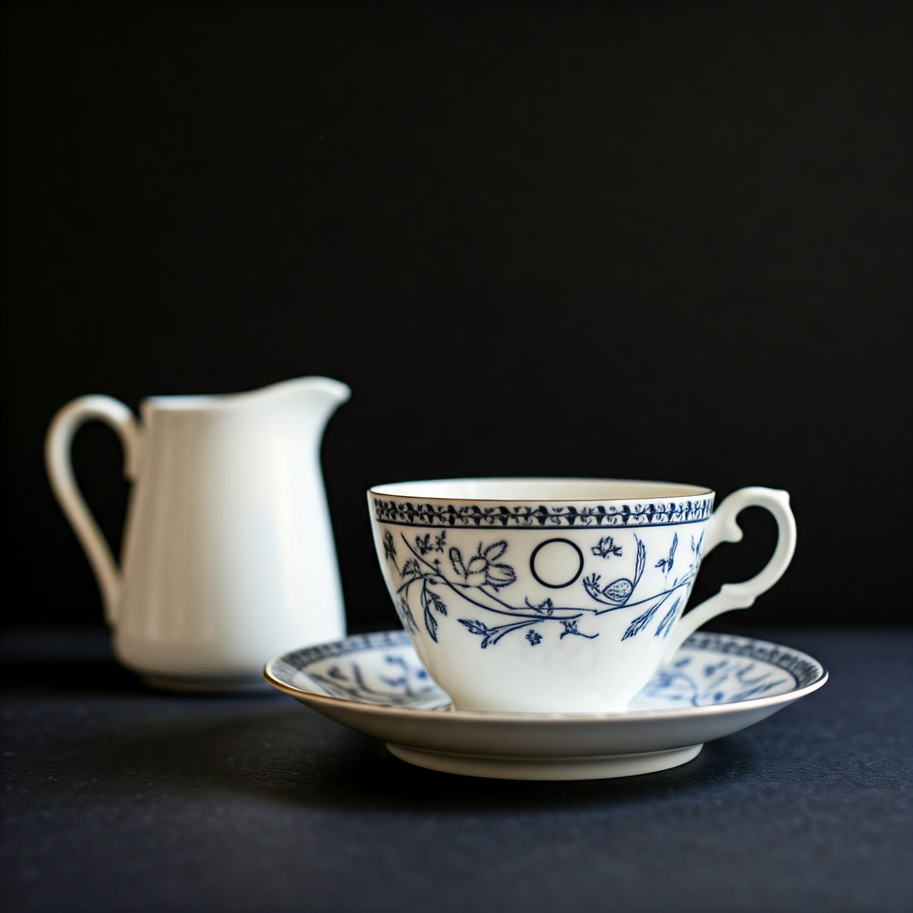
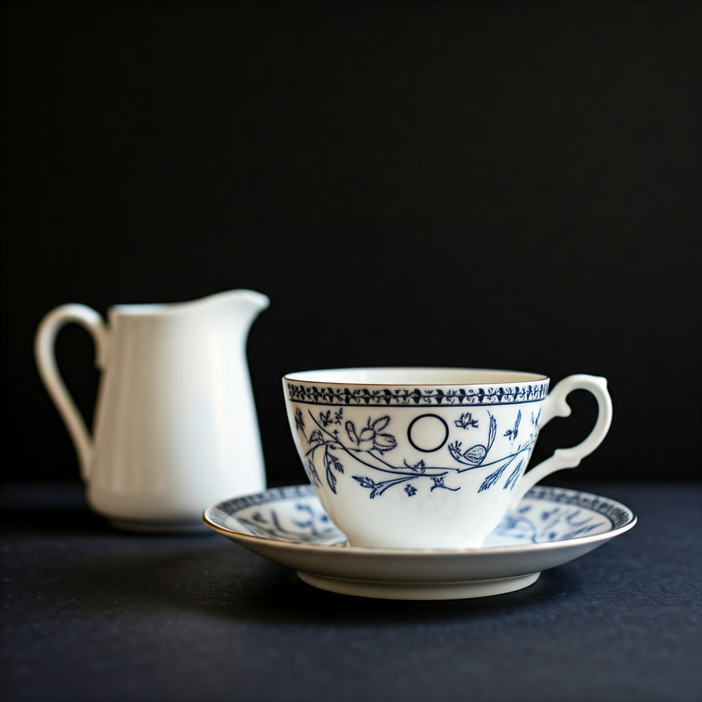

Welcome to Cocteau's
Tea
Where art, and tea converge
Experience the elegance and creativity of Cocteau's Tea. It's more than a store - it's a celebration of tea, art, and sophistication.
Experience the elegance and creativity of Cocteau's Tea. It's more than a store - it's a celebration of tea, art, and sophistication.
Cocteau's Tea is a celebration of creativity and refinement, inspired by the artistic genius of Jean Cocteau and the timeless elegance of Yves Saint Laurent. Our store is a harmonious blend of exquisite teas, artistic design, and a touch of fashion history, creating a truly unique experience. Whether you are a tea connoisseur, an art enthusiast, or simply seeking a peaceful escape, Cocteau’s Tea offers a welcoming space where every detail is infused with beauty and sophistication.
At Cocteau's Tea, we offer a curated selection of exquisite teas to suit every taste, including delicate green teas, robust black blends, soothing herbal infusions, and rare, exclusive varieties. Our teas are sustainably sourced from the finest growers worldwide, ensuring both exceptional quality and environmental responsibility. For a truly unique experience, explore our blending workshops, where you can craft a personalized tea blend tailored to your preferences.
Enter a world where each sip reveals a story of nature, and every detail reflects its artistry and true way.
At Cocteau's Tea, we believe tea is more than a beverage—it's an art form. Each cup tells a story, connecting cultures, flavors, and emotions. From the delicate crafting of blends to the thoughtful rituals of tea preparation, we invite you to immerse yourself in the timeless beauty of tea.
Bold and robust, black tea is known for its full-bodied flavor and rich aroma. Perfect for mornings or afternoons, its versatility makes it ideal for both straight sipping and pairing with milk or sweeteners.
A symbol of serenity and wellness, green tea offers a delicate, grassy flavor with subtle floral or vegetal notes. Renowned for its antioxidant properties, it's a favorite for those seeking a refreshing and healthful cup.
The perfect balance between black and green tea, oolong offers a complex profile that ranges from floral and creamy to nutty and roasted. Its artisanal production makes each sip an exploration of craftsmanship and flavor.
Subtle and refined, white tea is the purest and least processed of all teas. Its gentle flavor, with hints of sweetness and floral undertones, is perfect for those who appreciate a light, soothing cup.